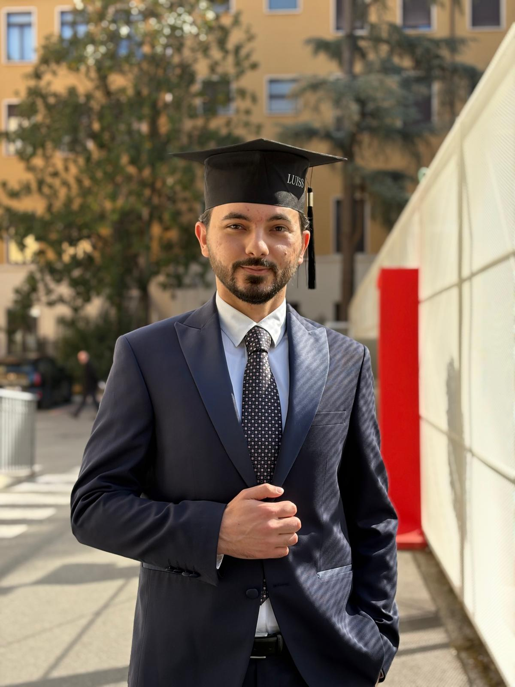

I turn rules into
Cybersecurity MSc candidate focused on Governance, Risk & Compliance. I have protected classified diplomatic data under strict GDPR-aligned procedures, and I am now building the GRC skills to do it at company scale.

About
At the Embassy of Albania in Rome I handled classified personal data and legal identity documents, enforced access controls and worked under zero tolerance for mistakes. My Luiss thesis studied humans as a security risk. Now, at Sapienza, I study the governance side: how organisations decide what to protect, prove they do it, and improve.
Focus
The core work of a GRC analyst, and where I am building proof.
Identify assets, threats and vulnerabilities, score likelihood and impact, and recommend treatment.
Policies, standards and procedures that are short, clear and actually usable by staff.
Evidence collection, control mapping and gap analysis so audits hold no surprises.
GDPR-aligned processes, access control and secure chain of custody for sensitive data.
Process
Four steps, the same logic behind ISO 27001, applied to any organisation.
List the assets, the threats and the weak points. You cannot protect what you cannot see.
Score likelihood and impact so the biggest risks come first.
Mitigate, accept, transfer or avoid, with a named owner and a deadline.
Measure, review and improve, and keep the evidence an auditor will ask for.
Projects
Practical GRC work I am producing now. Each one will link to a downloadable document.
15+ risks for a private clinic: assets, threats, scoring, treatment and ISO 27001 Annex A controls.
RiskISO 27001One-page policy plus a password standard and a breach response procedure.
GovernancePolicyReview of a real company's privacy policy against GDPR requirements, with findings and fixes.
ComplianceGDPRWannaCry-style case: what failed, current vs target maturity, and a plain-language answer to the CEO.
Gap analysisExperience
Education
Credentials
Leadership
Roles where I represented others, served communities and worked across cultures.
Maarif International Schools, North Macedonia · 2021–2022. Led the student body and acted as the link between students and school management.
Red Cross of North Macedonia. Community service and teamwork in a humanitarian organisation.
American Corner Tetovo. Language, culture and civic education programmes.
Youthpass certificate, Türkiye · 2019. Early international and intercultural experience.
Contact
I am looking for a junior GRC or compliance role in Switzerland or Italy, or remote across Europe and the USA. Write to me, I reply fast.